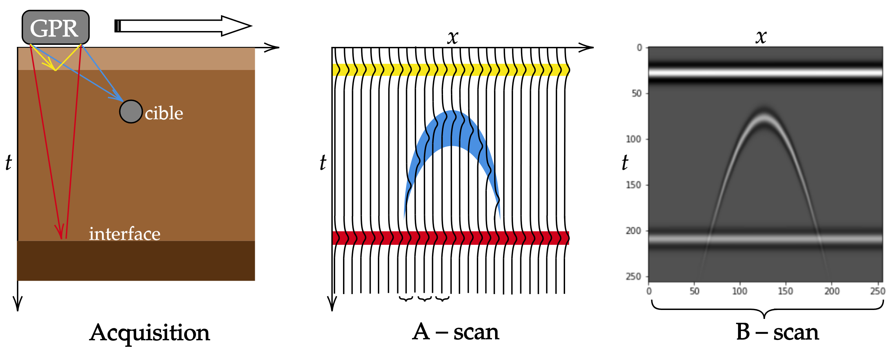
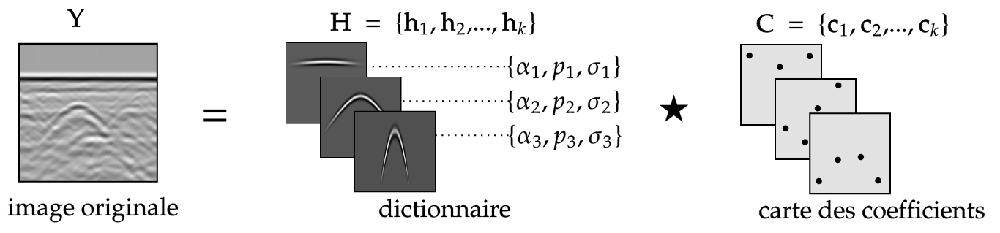

Introduction
MIRAG : Module d’ Inversion et de Reconstruction par ADMM pour le GPR
The internship carried out within LISTIC and in collaboration with the company Géolithe within the framework of the SMGA project 1, aims at implementing signal processing techniques in order to exploit the concept of airborne GPR (Ground Penetrating Radar), this approach is in line with a proof of concept or feasibility.
This proposal is relatively new and benefits from the joint development of drone technologies and artificial intelligence. This internship is articulated around two main axes: the improvement of the quality of the obtained radargrams and the classification of signals of interest within them. In this report we focus mainly on the presentation of the first axis, and present the tracks and methods of the second axis that will be used for the second part of the internship.
Until very recently, the use of GPR was often associated with configurations where the radar making the measurement was posed, with the antenna placed on the ground. In this way the radar can maximize the propagation of the wave in the ground with little loss at the interface between the radar and the ground. But since the rise of drones, the latter are interesting tracks to monitor places at a distance and difficult to access. It is in this context that Geolithe wishes to study the feasibility of these airborne GPRs in order to improve the acquisition of radar images for the study of cavities.
The interest is double since it is a question of automating the treatment and the interpretation of radargrams in the context of the airborne radar where the identification of the zones of interest is made more difficult by 2 components:
The stability and the position of the device which must be of a great precision to allow the construction of the image without artifact.
The layer of air between the radar and the surface of the ground to be studied, which strongly attenuates the propagation of the wave and which can vary according to the height of the device.
Context
The principle of GPR is known and mainly used in various fields, from archaeological excavations to mine detection or paleoclimatic marker recognition (Daniels 2,Tinelli 3). This method can be schematized in the following way:
The GPR placed on the ground moves slowly in one direction and sends an electromagnetic wave. This wave is reflected by all the obstacles it meets until it is attenuated. The GPR will then record all the reflections as a function of time at a given position to form a trace called A-scan. The recording and concatenation of a large number of A-scan along the displacement of the GPR gives rise to the radargram called B-scan.
Interfaces or material changes appear as lines, while targets are recognizable by the shape of the hyperbola, parameterized by the characteristics of the medium (permittivity, frequency of the wave) and due to the variation of the distance between the GPR and the target. During this internship, we assume a mono-static type of radar where the receiving and transmitting antenna are merged in the GPR.
Organization of the module
In order to answer the problems stated above, we based ourselves on the work of Terrasse 4 and Wohlberg 5. The solution of reconstruction and improvement of radargrams is the modeling of the latter by the convolution product between a dictionary of simple patterns and maps of coefficients.
The module is divided into two main categories:
dictionary: functions that allow the creation of the dictionary for the resolution of the inversion problem, and this by 2 approaches mathematical and physical.
optmization: functions that perform the inversion to get the best coefficient maps necessary for the reconstruction.
In addition, there are complementary functions of displays, calculation of metrics and filtering necessary for the proper functioning of the module.
- 1
Mountain Stratigraphy by Airborne Georadar.
- 2
David Daniels. A review of gpr for landmine detection. Sensing and Imaging,7 :90-123, 09 2006.
- 3
Chiara Tinelli, Adriano Ribolini, Giovanni Bianucci, Monica Bini, and Walter Landini. Ground penetrating radar and palaeontology: The detection of sirenian fossil bones under a sunflower field in tuscany (italy). Comptes Rendus Palevol,11(6) :445-454, 2012.
- 4
Guillaume Terrasse. Geodetection of buried networks by radar imaging. Theses,Télécom ParisTech, March 2017
- 5
Brendt Wohlberg. Admm penalty parameter selection by residual balancing, 2017